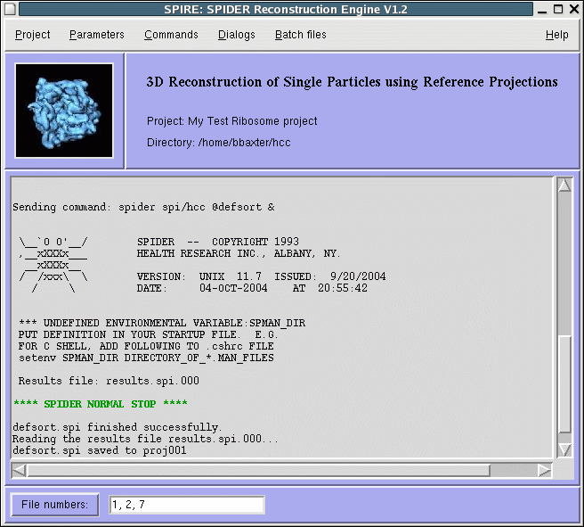
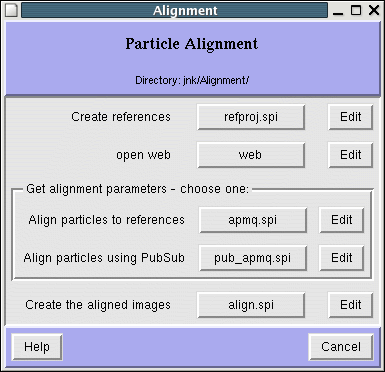

SPIRE |
The SPIDER Reconstruction Engine |
Table of Contents
Overview
How to run Spire
Installation
Projects in Spire
Project-wide parameters
Configuration of procedure files and directories
Configuration editor
Running SPIDER procedure files
The Project Viewer
The procedure file form
How to write SPIDER procedure files
File numbering
Additional options
The menus
Using an external project database
Some usefull graphical tools
Spire Tutorial
Overview
Spire provides:
- A graphical user interface (GUI) for executing
SPIDER
procedure files and other programs,
- A way to manage and organize the many output files created by
SPIDER during reconstruction projects.
Spire is designed to simplify running projects that consist of
numerous SPIDER procedure files.
Users who are new to SPIDER can quickly start processing electron micrographs.
Spire provides a convenient environment for testing and debugging procedure files.
However, Spire does not deal with program correctness per se - it simply runs
your SPIDER procedure files, and saves a list of output files to a project file.
Note: Spire requires SPIDER version 13 or later.

Projects
- Spire is organized around projects. Informally, a project
typically consists of a set of
input electron micrograph images, the procedure files that
process this data to produce a
reconstructed volume, and various intermediate data files.
- A project template is a set of Spider procedure files
that carry out a specific technique,
such as double-tilt tomographic reconstruction, or
reconstruction of single particles with reference projections.
- A project consists of applying project template procedure files
to actual data files.
- Spire project templates are specified by
configuration files, which
indicate the directory structure of a project and the location of procedure files. The
configuration file also specifies how the GUI should present
procedure files to the user.
- Spire saves information about the current project to a project file, which is a Python
"shelve" object. /li>
Dialogs
The graphical interface is organized around dialogs, windows with buttons linked to
SPIDER procedure files. Dialogs list a set of conceptually related procedure files, e.g.,
they may be organized around project subdirectories.

procedure files can be executed in SPIDER by pressing the button with the procedure file's name.
A procedure file can be edited with its accompanying Edit button.
The Help button opens a URL manual page with documentation about the procedure files in this dialog.
The appearance of dialogs is specified by the
configuration,
and can be changed in the configuration editor.
External database
Although Spire maintains an internal "database" of executed procedure files and their outputs,
it may be interfaced to an external project database if your
laboratory has one. While the Python coding depends entirely on the details of your local
database, an API (Application Program Interface) is provided, along with example code for a
MySQL project database. See Using an external database with Spire for details.
SPIDER
You should have a working knowledge of the SPIDER operations that constitute the procedure
files you're running. There is plenty of documentation:
Spider home page
A Quick Start Guide to Spider
Spider User's Guide
Spider Manual pages
Reconstruction of Single Particles
using Reference Projections
(many example procedure files here!)
How to run Spire
- At the Unix prompt, type:
spire
- or, if you already have a project file, give the project filename
as the first argument to Spire (no extension):
spire proj0127
- Run it in background mode and you can still use the terminal:
spire proj0127 &

Next: Projects
Updated 22 October 2018